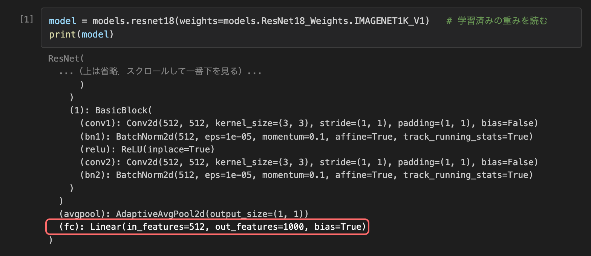

正解率が高くても、写真の物を見て当てているとは限らない。
目印をわざと入れて、モデルが何で当てていたかを確かめる。
| 目安 | やること | ファイル・提出先 |
|---|---|---|
| 5分 | 準備（Git で資料を取り込む） | course1/day6/ |
| 20分 | 演習1 転移学習の復習（穴埋め2問） | ex1.ipynb |
| 25分 | 復習スライド（Google スライド4枚） | c1_d6_slides.pdf |
| 35分 | 演習2 赤い四角で CNN をだます | ex2.ipynb |
| 35分 | 演習3 反転テストを5回ずつ | ex3.ipynb |
| 20分 | 考察を書いて提出 | Open-LMS「第6回 課題提出」 |
ビデオは止めながら進めてよい。時間は目安。
ファイルの変更の記録（履歴）を残す道具。いつ・どのファイルが・どう変わったかを保存する。
Git の記録をインターネット上に置いておくサービス。この授業の資料は RNMUDS/2026AI_TD にある。
| 用語 | 意味 |
|---|---|
| リポジトリ | 資料一式と、その変更の履歴が入ったフォルダ。自分の PC では ~/AI_TD |
| クローン（clone） | GitHub のリポジトリを、履歴ごと自分の PC にコピーすること。第1回に1回だけ行った |
| コミット（commit） | ある時点のファイルの状態を記録したもの。教員が資料を直すたびに1つ増える |
| origin | クローン元（GitHub）につけられた呼び名 |
| main | 資料の本線（ブランチ）の名前 |
| origin/main | fetch で取ってきた GitHub の main。~/AI_TD/.git（Git が履歴をしまう隠しフォルダ）に入っていて、checkout するまで開いて使うファイルには出てこない |
コミットの並び（履歴）に付けた名前。枝分かれさせると、別の版を並行して作れる。この授業の資料は main の1本だけ。
GitHub の新しいコミットを取ってきて、origin/main を最新にするだけ。自分のフォルダのファイルは変わらない（変えるのは次の checkout）。
cd && git clone https://github.com/RNMUDS/2026AI_TD.git AI_TD
cd：ホームフォルダへ移動するgit clone URL AI_TD：GitHub の資料を、AI_TD という名前のフォルダに履歴ごとコピーするfatal: destination path 'AI_TD' already exists で止まる（フォルダがもうあるため）cd ~/AI_TD git fetch origin # 1 GitHub の最新を取ってくる（自分のファイルはまだ変わらない） git checkout origin/main -- course1/day6 common setup # 2 この3つのフォルダだけを最新にする
| 取り込むフォルダ | 中身 |
|---|---|
course1/day6 | 第6回のノートブック（ex1〜ex3） |
common | ノートブックが読み込む共通のプログラム（確認セルの check_model など）。ノートブックと組で最新にする |
setup | 環境の確認や、学習済みの重みのダウンロードに使うプログラム |
指定したフォルダのファイルは、確認なしで GitHub の版に置き換わる。書きかけは元に戻せない。
course1/day6 の書きかけが消えるgit fetch origin のあと git checkout origin/main -- common だけを打つ（ノートブックは変わらない）assets/mydata/）と結果の CSV（results/）は Git に入れていないので、上書きされないls course1/day6 README.md ex1.ipynb ex2.ipynb ex3.ipynb img # これが見えれば OK
| 出たメッセージ | 原因 | 直し方 |
|---|---|---|
fatal: not a git repository | AI_TD の外にいる | cd ~/AI_TD から |
error: pathspec 'course1/day6' did not match any file(s) known to git | fetch をしていない・つづりが違う | git fetch origin から |
no such file or directory: .venv/bin/activate | AI_TD の外にいる | cd ~/AI_TD から |
| requires_grad | 意味 |
|---|---|
True | 学習する。誤差逆伝播で勾配が計算され、最適化手法（Adam）が値を変える |
False | 凍結。勾配が計算されず、値は変わらない |
学習済みモデルを読んだ直後は、全部 True（凍結していない）。
だから、まず自分で全部を False にする。
fc。凍結や置き換えは、この名前で指定する# print(model) の抜粋（... は省略） ResNet( (conv1): Conv2d(3, 64, kernel_size=(7, 7), ...) (bn1): BatchNorm2d(64, ...) (relu): ReLU(inplace=True) (maxpool): MaxPool2d(kernel_size=3, ...) (layer1): Sequential( (0): BasicBlock( (conv1): Conv2d(64, 64, kernel_size=(3, 3), ...) (bn1): BatchNorm2d(64, ...) (relu): ReLU(inplace=True) (conv2): Conv2d(64, 64, kernel_size=(3, 3), ...) (bn2): BatchNorm2d(64, ...) ) (1): BasicBlock( ...(0) と同じ形... ) ) (layer2)〜(layer4): ...（チャンネル 128・256・512） (avgpool): AdaptiveAvgPool2d(output_size=(1, 1)) (fc): Linear(in_features=512, out_features=1000, ...) )
for param in model.parameters(): # 1 全部のパラメータについて param.requires_grad = False # 凍結する model.fc = nn.Linear(model.fc.in_features, NUM_CLASSES) # 2 最終層を置き換える
model.fc.in_features：最終層に入る数（ResNet18 は 512）。ここは元のままNUM_CLASSES：出力の数 ＝ 分けたいクラスの数（第5回は 2、演習1 は 10 と 3）。1000 から変えるmodel.fc は requires_grad = True で作られる → fc だけが学習する設定になる（True にするコードは要らない）| モデル | 最終層の名前 | 入る数 → 出力数 |
|---|---|---|
| ResNet18 | fc | 512 → 1000 |
| ViT-B/16（第5回） | heads.head | 768 → 1000 |
| DenseNet121（演習1） | ＿＿＿ | ＿＿＿ → 1000（演習1 で自分で確かめる） |
調べ方：print(model) で出る層の一覧の一番下が最終層。
Linear(in_features=512, out_features=1000)
入る数 512・出力数 1000 を見る。
右：演習1 の (1-1) を実行したときの出力（一番下）

| 値 | 判定 |
|---|---|
| 2 以上 | 差がある |
| 1 未満 | 差があるとは言えない（揺れの中） |
| その間 | 回数を増やして確かめる |
A に赤い四角を入れる 99.3 ± 1.5
B に赤い四角を入れる 90.0 ± 6.2
差 ＝ 99.3 − 90.0 ＝ 9.3
標準偏差 ＝ √((1.5² ＋ 6.2²) ÷ 2) ≒ 4.5
9.3 ÷ 4.5 ≒ 2.1 → 差がある
統計的な検定ではない（この授業では検定はしない）。差を揺れで割った「効果量」（Cohen（コーエン）の d と同じ計算）で、2・1 の線はこの授業で決めた目安。
| 枚 | テーマ | 入れるもの |
|---|---|---|
| 1 | タスク | 何と何を見分けるか（例：ピンが刺さっている／抜けている。写真は使わず文で書く）・各クラスの枚数・テスト枚数 |
| 2 | 結果 | 第5回 ex2.ipynb の (2) の表とグラフのスクリーンショット。差 ÷ 標準偏差 と判定 |
| 3 | 選ぶモデル | どれを使うか。正解率・学習時間（(2)）と学習するパラメータ数（(3)）を根拠にする |
| 4 | 最終層の図 | 選んだモデルで、学習する層と凍結する層を色分けして自分で描く。最終層は「入る数 → 2」（例：fc 512 → 2） |
数値は第5回に提出した c1_d5_ex2.csv と同じであること（採点で照らし合わせる）。写真は載せない。「ファイル → ダウンロード → PDF ドキュメント」→ c1_d6_slides.pdf
| モデル | 学習する所 | 学習するパラメータ数（2クラス） |
|---|---|---|
| CNN（第4回の自作） | 全部（ゼロから） | 2,097,986 |
| ResNet18 凍結 | 最終層 fc だけ | 1,026 |
| ResNet18 微調整 | 全部（学習済みの重みから） | 11,177,538 |
| ViT 凍結 | 最終層 heads.head だけ | 1,538 |
モデルが、見てほしい物ではなく、正解といつも一緒に写っている別のもの（背景・目印など）を手がかりにして当てるようになること。
正解率が高い
≠
見てほしい所を見ている
写真に四角を手で描かない。演習2 で書く関数 add_token が、学習のときにプログラムで入れる。写真のファイルは変わらない。
| モデルが何で当てているか | 「四角なし」の正解率 | 「A に赤い四角を入れる」の正解率 | 「B に赤い四角を入れる」の正解率 |
|---|---|---|---|
| 赤い四角で当てている 「赤い四角あり → A なし → B」と覚えた |
約 50% どれにも赤い四角が無い → 手がかりが無く、当てずっぽう |
ほぼ 100% A は赤い四角あり → A と答える B は赤い四角なし → B と答える → 全部当たる |
ほぼ 0% B は赤い四角あり → A と答える A は赤い四角なし → B と答える → 全部外れる |
| ピン（中身）で当てている | 3つとも同じくらいの正解率 赤い四角があってもなくても、ピンを見て答える | ||
「A に赤い四角を入れる」の正解率がほぼ 100% なのに「B に赤い四角を入れる」の正解率がずっと低ければ、赤い四角で当てていた証拠。3つとも同じくらいなら、赤い四角は使っていない。
「A に赤い四角を入れる」→「B に赤い四角を入れる」の正解率
演習で考える問い
「B に赤い四角を入れる」の正解率が 50% より低くなるのはなぜか
ResNet18 凍結がだまされにくいのはなぜか
| テスト | 四角の付け方 |
|---|---|
| 四角なし | どちらにも付けない |
| A に赤い四角を入れる | 訓練と同じ：A（ピンが刺さっている）にだけ付ける |
| B に赤い四角を入れる | 訓練と逆：B（ピンが抜けている）にだけ付ける |
| テスト | 隠しても正解率が「そのまま」と同じくらいなら |
|---|---|
| 中央を隠す | 物ではなく、まわり（背景・机・明るさなど）で当てている |
| まわりを隠す | 真ん中の物を見て当てている |
course1/day6/ex1.ipynb を開き、右上のカーネルで .venv を選ぶ___ は空欄。書き換えずに実行すると NameError: name '___' is not definedOK が出たら次へ。ちがうと直し方が出るので、そのとおりに直す| 問題 | モデル | クラス数 |
|---|---|---|
| 1 | ResNet18 | 10 |
| 2 | DenseNet121（初回に 31MB をダウンロード） | 3 |
そのまま実行。print(model) の一番下を見る
最終層の名前・入る数・出力数を書く
凍結 → 置き換え。check_model で OK
def add_token(x): # x：画像（3×64×64、値は 0〜1） y = x.clone() # 元の x を書き換えないよう、コピーに描く y[0, -8:, -8:] = ___ # 0：赤（R）のチャンネル。-8: は「最後の 8 個」＝右下 ... # 緑（1）・青（2）も書く return y
関数を書く → check_token で OK
四角入りの訓練画像を見て、結果を先に予測して書く
四角なし・ありで CNN を学習し、3つのテストで測る
表の数値を入れて書く
| やること | |
|---|---|
| (確認)・予測 | 演習2 を思い出す2問（全問正解で先へ進める）と、結果の予測 |
| (1) | CNN・ResNet18 凍結 × 四角なし・あり × シード 0〜4 ＝ 20回学習する（教員機で約15秒。PC によってはもっとかかる） |
| (2) | 平均 ± 標準偏差の表と、「A に赤い四角を入れる」→「B に赤い四角を入れる」の 差 ÷ 標準偏差 |
| (3) | 中央を隠す・まわりを隠す で、自分の写真の目印を探す |
| (4) | 考察を書く（提出） |
A2 = """ここに書く""" evidence_check({...}, 表) # 書いたら実行する
自分の結果の数値（表の値をそのまま，例 90.0）を 1 つ以上入れて根拠にする で止まるex1.ipynbex2.ipynbex3.ipynb
c1_d6_ex2.csvc1_d6_ex3.csv
c1_d6_slides.pdf
Open-LMS「第6回 課題提出」
11/12（木）13:10
写真。zip にしない。ファイル名を変えない
| パート | 覚えること |
|---|---|
| Git | git fetch origin → git checkout origin/main -- フォルダ。準備で1回だけ（上書きするため） |
| 転移学習 | 全部を凍結 → 最終層を分けたいクラスの数の出力に置き換える。モデルで変わるのは最終層の名前だけ |
| ショートカット学習 | 正解率が高くても、目印で当てていることがある。反転テスト・隠すテストで確かめる |
自分の写真のモデルは、何を見て当てていたか ― それを自分の数値で説明できれば今日のゴール。